SODO HOTEL & COMMONS · PAJU
도심 속 작은 섬,
소도小島
바쁜 일상에서 잠시 벗어나
공간이 주는 힐링과 인사이트를 경험하세요
기분 좋은 하루, [소도]
About
작은 섬에서의 하루,
그곳이 소도입니다.
소도(小島)는 작은 섬을 뜻합니다.
도시의 소란에서 한 걸음 물러나
오롯이 나에게 머무는 시간.
소도호텔 앤 커먼즈는 객실이 있는 본관과 카페·레스토랑·루프탑이 있는 별관 소도 커먼즈로 이루어져 있습니다. 경의중앙선 금촌역에서 걸어서 4분, 출장의 끝에도 파주 여행의 시작에도 단정하고 편안한 하루를 준비해 두었습니다.
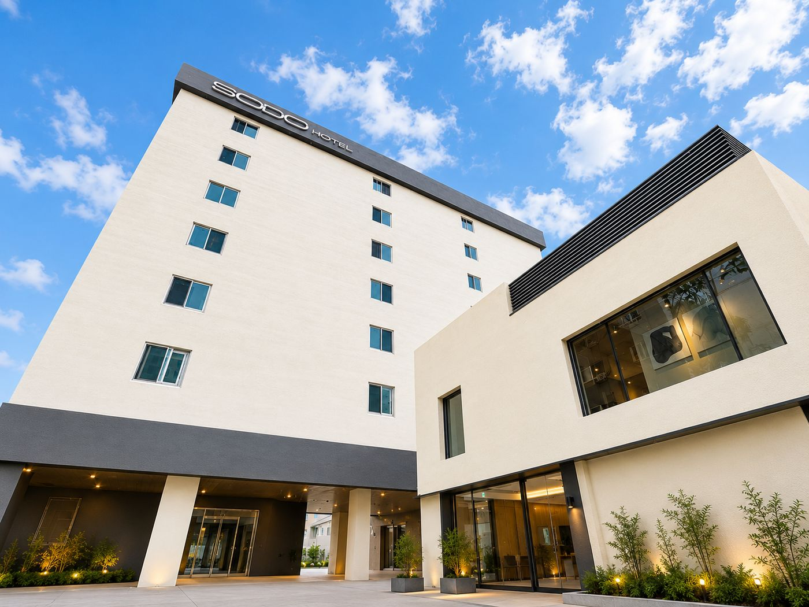
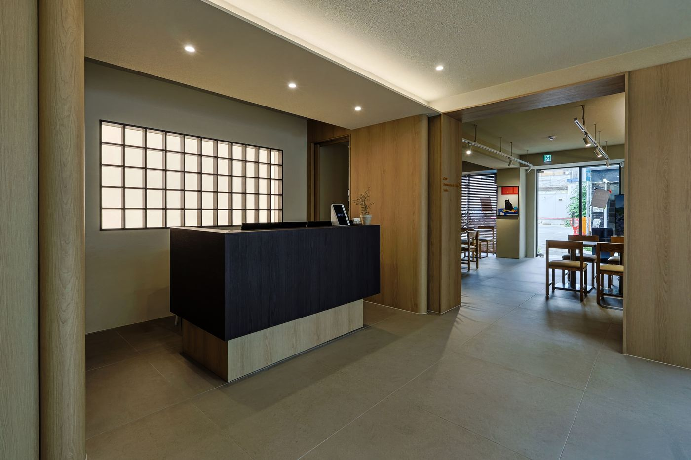
- 체크인
- 16:00
- 체크아웃
- 12:00
- 주차
- 투숙 중 무료
- Wi-Fi
- 전 구역 무료
Rooms
네 가지 방식의 쉼
모든 객실에 킹사이즈 시몬스 침대를 두었습니다. 일정과 인원에 맞는 객실을 골라보세요.
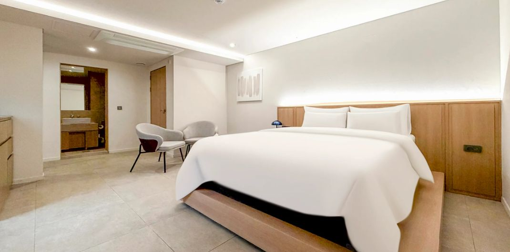
SODO DELUXE ESSENTIAL
소도 디럭스 에센셜
꼭 필요한 것을 단정하게 갖춘 기본 객실. 넉넉한 침대와 작은 라운지 체어에서 하루를 정리하기 좋습니다.
- 침대
- 킹사이즈 시몬스 더블 1
- 인원
- 최대 2명
- 냉·난방기
- 스타일러
- 헤어드라이어
- 전기포트
- 사이드테이블
- 통합 OTT
- 웰컴드링크
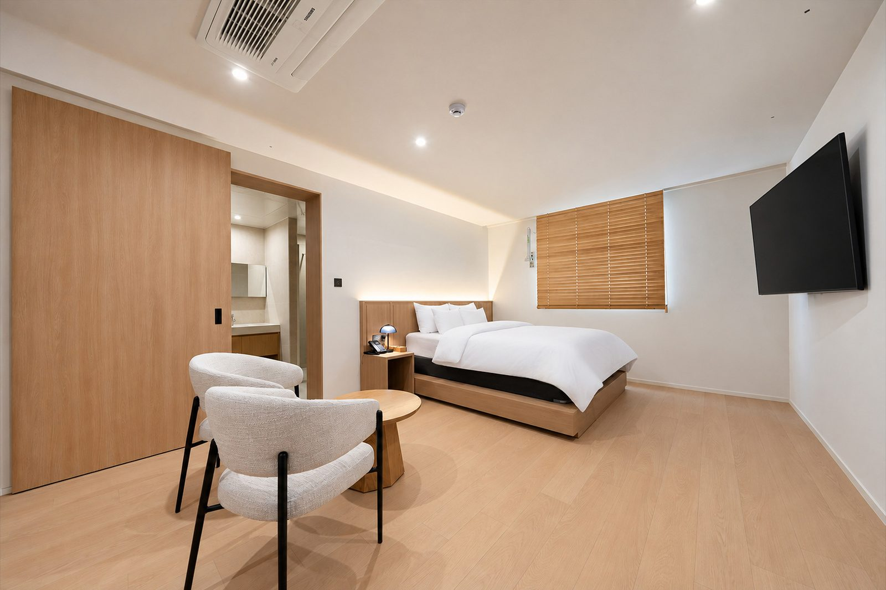
SODO SIGNATURE DEEP SAUNA
소도 시그니처 딥 사우나
편백나무 건식 사우나객실 안에서 편백나무 건식 사우나를 즐길 수 있는 시그니처 객실. 긴 하루의 피로를 방 안에서 풀어보세요.
- 침대
- 킹사이즈 시몬스 더블 1
- 인원
- 최대 2명
- 편백 건식 사우나
- 냉·난방기
- 스타일러
- 헤어드라이어
- 전기포트
- 사이드테이블
- 통합 OTT
- 웰컴드링크
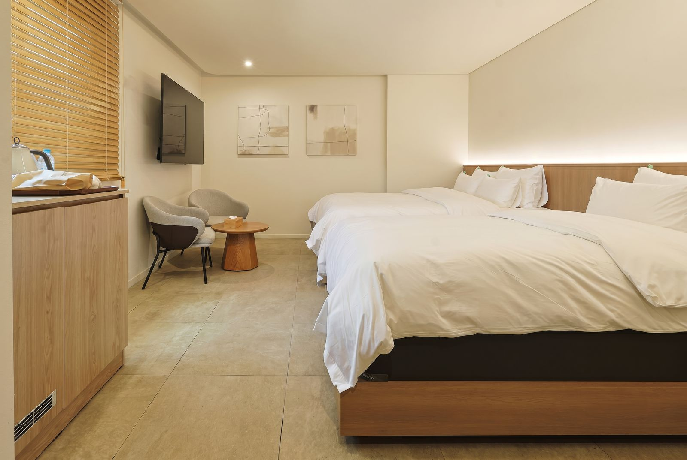
SODO SIGNATURE TWIN
소도 시그니처 트윈
최대 3인 투숙킹사이즈 더블 침대와 슈퍼싱글 침대를 함께 둔 객실. 가족이나 동료와 함께하는 일정에 알맞습니다.
- 침대
- 킹사이즈 시몬스 더블 1 + 슈퍼싱글 1
- 인원
- 최대 3명
- 냉·난방기
- 스타일러
- 헤어드라이어
- 전기포트
- 사이드테이블
- 통합 OTT
- 웰컴드링크
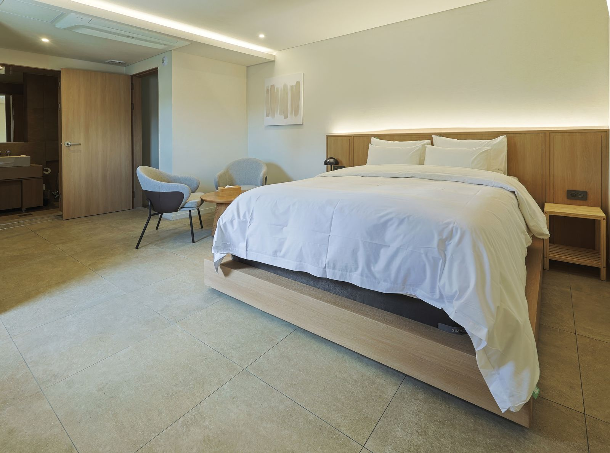
SODO WORK & BATH
소도 워크 앤 바스
일을 마무리하고 여유 있게 씻고 쉬는 하루를 위한 객실. 비데가 갖춰진 욕실과 넉넉한 침대를 갖췄습니다.
- 침대
- 킹사이즈 시몬스 더블 1
- 인원
- 최대 2명
- 냉·난방기
- 비데
- 스타일러
- 헤어드라이어
- 전기포트
- 사이드테이블
- 통합 OTT
- 웰컴드링크
전 객실 금연(전자담배 포함)입니다. 생수와 음료 세트는 무료로 제공되며, 추가 비품은 프론트에 요청해 주세요.
Facilities
머무는 동안 필요한 것들
본관에는 투숙객 누구나 쓸 수 있는 라운지와 세탁실, 공용 PC, 이솝 체험존이 있습니다.
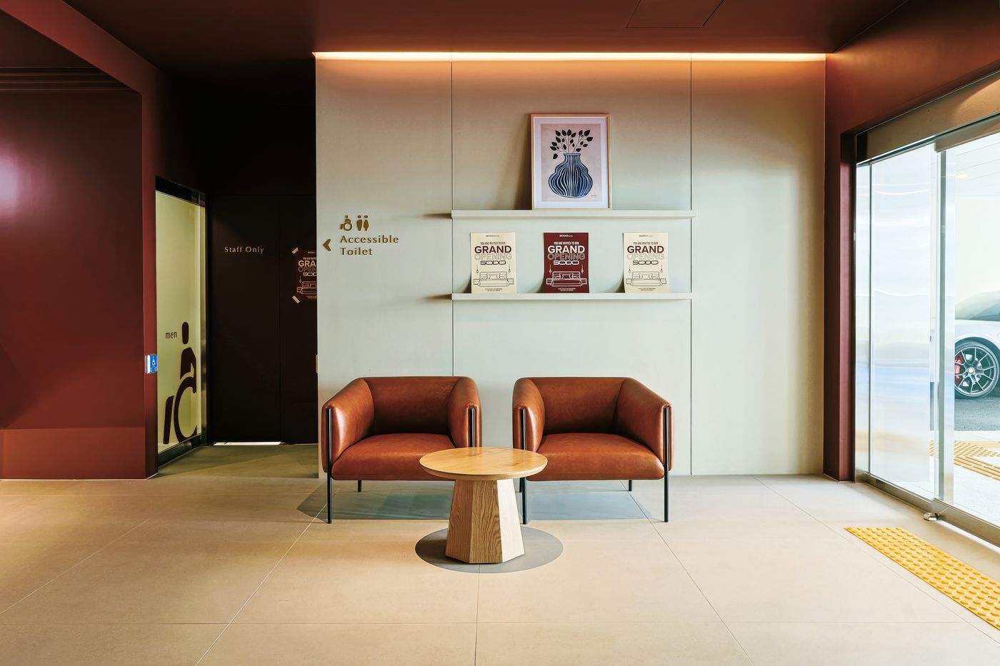
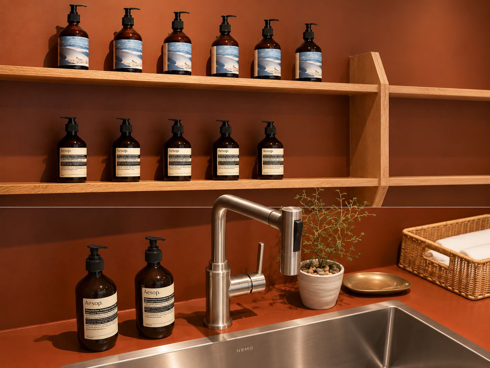
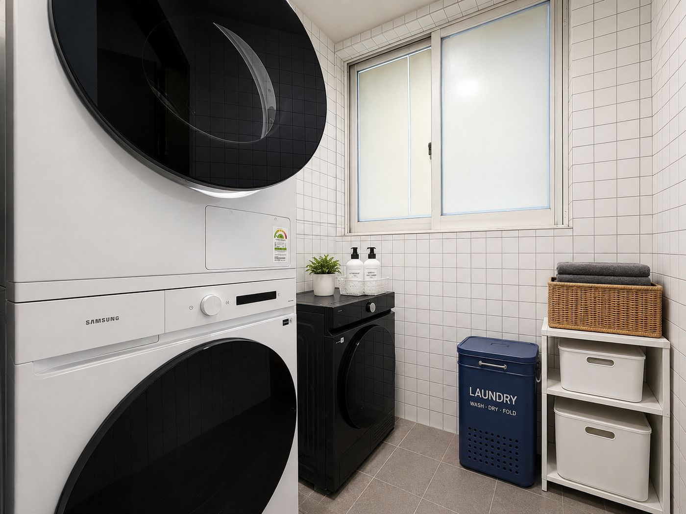
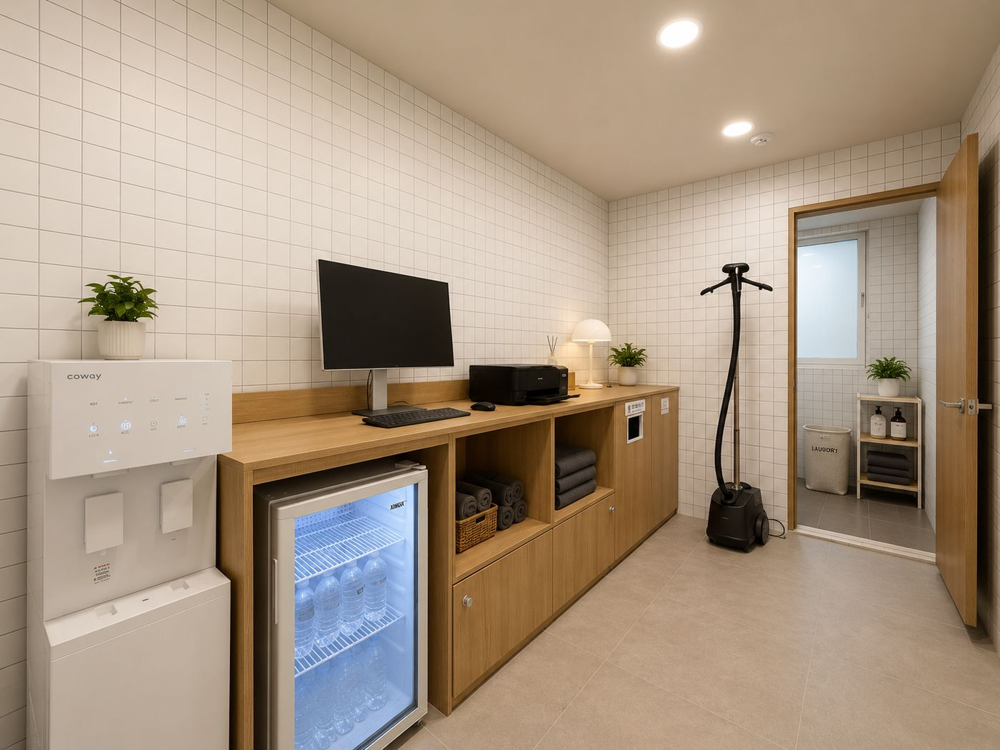
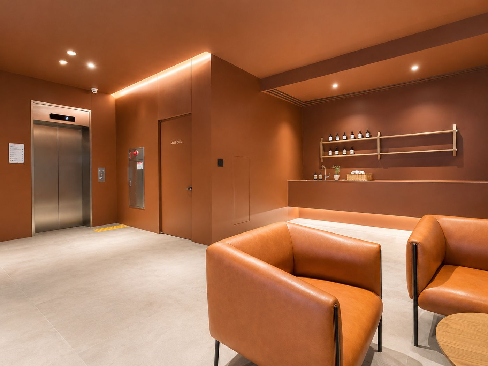
- 세탁기 · 건조기
- 공용 PC
- 냉 · 온수기
- 일회용품
- 렌즈 세정액
- 스팀다리미
- 이솝 체험존
- 흡연장소 (1층 야외 주차장)
Sodo Commons
소도 커먼즈
별관 소도 커먼즈는 숙박 고객 누구나 이용할 수 있습니다. 카페와 레스토랑, 루프탑, 회의실에서 식사와 휴식, 영화 관람까지 즐겨보세요.
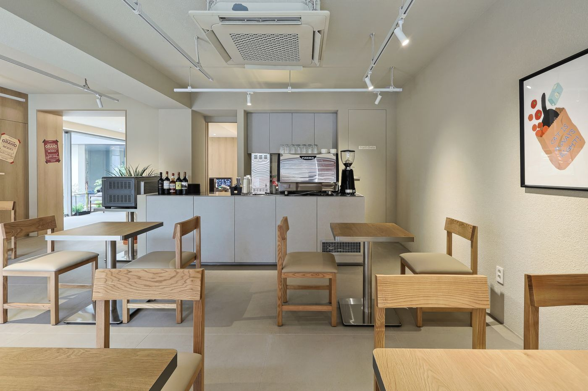
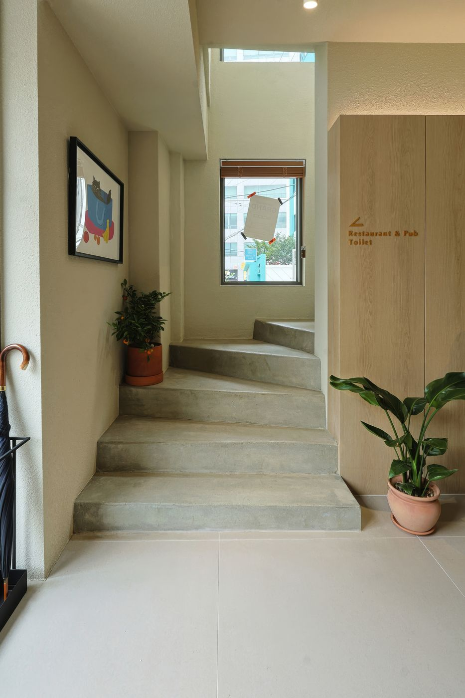
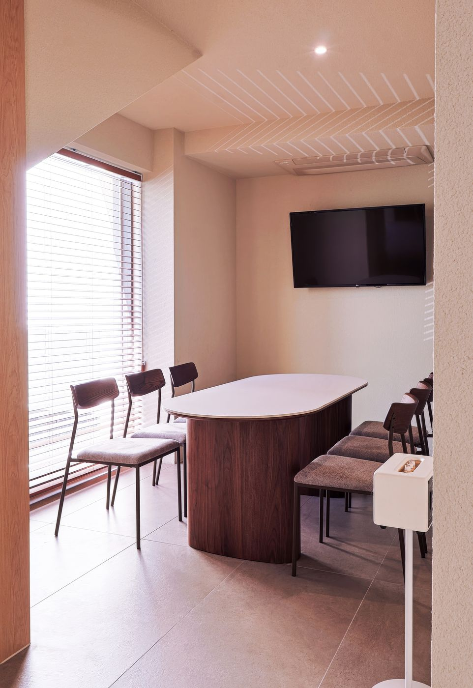
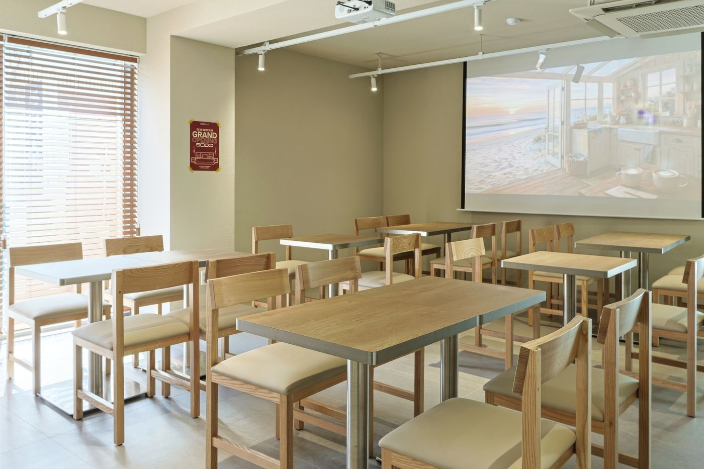
- BREAKFAST
- 07:00 – 09:00조식 · 1인 10,000원
매주 일요일 휴무 - RESERVATION
- 전날 사전 신청프론트 데스크에서 접수
Around Sodo
파주 여행의 한가운데,
소도에서 떠나세요
소도호텔은 파주의 중심 금촌에 있습니다. 북쪽의 임진각, 서쪽의 헤이리와 아울렛, 동쪽의 수목원과 호수, 남쪽의 운정과 일산까지 파주·고양 가볼 만한 곳 107곳 가운데 100곳이 차로 30분 안쪽입니다. 짐은 소도에 두고 가볍게 다녀오세요.
107곳 · 가까운 순
-
조인폴리아
차로 약 9분 · 3.4km파주 · 전문상가
소도에서 가장 가까운 여행지로, 체크인 전이나 체크아웃 뒤 가볍게 들러 식물을 구경하기 좋습니다.
-
봉일천종합시장
차로 약 10분 · 4.1km파주 · 상설시장
오래된 시장 구경으로 출출함을 달래고, 가까운 소도에서 느긋한 저녁을 보내세요.
-
월롱시민공원
차로 약 12분 · 5.1km파주 · 시민공원
소도에서 가까운 나들이 공원이라, 체크아웃 뒤 가볍게 들르기 좋습니다.
-
파주놀이구름
차로 약 12분 · 6.4km파주 · 체험관광
아이와 종일 논 날은 침대가 둘인 시그니처 트윈에서 온 가족이 함께 쉬어 가기 좋습니다.
-
교하동 고인돌 산림욕장
차로 약 13분 · 5.6km파주 · 선사유적지
산림욕으로 맑아진 몸을, 편백 향이 도는 사우나 객실에서 한 번 더 쉬게 해 주세요.
-
퍼스트가든
차로 약 13분 · 5.7km파주 · 수목원ㆍ정원
정원 산책 뒤 저녁은 소도 커먼즈에서, 하루를 파주 안에서 느긋하게 이어갈 수 있습니다.
-
파주 삼릉 [유네스코 세계유산]
차로 약 13분 · 6.2km파주 · 고분, 능
왕릉 숲길을 천천히 걷고, 가까운 금촌의 소도에서 차분한 저녁으로 이어가기 좋습니다.
-
파주 장릉(인조·인열왕후) [유네스코 세계유산]
차로 약 13분 · 6.8km파주 · 고분, 능
세계유산 왕릉의 고즈넉함을 본 뒤, 가까운 소도에서 조용한 하루를 완성하세요.
-
교하중앙공원
차로 약 13분 · 7.9km파주 · 시민공원
맨발 산책으로 가벼워진 몸, 소도의 편백 사우나 객실에서 한 번 더 풀어 주세요.
-
운정호수공원
차로 약 14분 · 8.8km인기파주 · 주제공원
운정신도시 한가운데 펼쳐진 호수공원으로, 물가를 따라 걷는 산책로와 저녁 풍경이 좋습니다.
인기 여행지 열 곳 중 가장 가까워, 체크인 뒤 저녁 산책만 다녀와도 파주에서의 첫날이 채워집니다.
-
일산가구단지
차로 약 14분 · 9.1km고양 · 전문상가
가구를 둘러보느라 지친 다리, 시몬스 침대가 있는 소도 객실에서 쉬어 가세요.
-
운정체육공원
차로 약 15분 · 6.8km파주 · 주제공원
경기나 대회로 운정을 찾았다면, 땀에 젖은 옷은 소도 세탁실에서 해결하고 편히 쉬세요.
-
경기미래교육 파주캠퍼스
차로 약 15분 · 8.4km파주 · 체험관광
이국적인 거리를 산책한 뒤, 소도 커먼즈 카페에서 여행의 여운을 이어가세요.
-
새암공원
차로 약 15분 · 8.9km파주 · 시민공원
운정의 조용한 산책 공원으로, 소도에 묵는 날 아침 산책 코스로 삼기 좋습니다.
-
덕이동 로데오거리
차로 약 15분 · 10.1km고양 · 기타쇼핑시설
소도에서 가까운 일산 쇼핑 거리로, 고른 옷은 객실 스타일러에 걸어 두세요.
-
국립민속박물관 파주
차로 약 16분 · 9.1km파주 · 박물관
헤이리와 함께 둘러보면 하루가 모자라니, 소도에 묵고 이틀에 나눠 보세요.
-
운정건강공원
차로 약 16분 · 9.3km파주 · 시민공원
운정에서 운동 경기를 마친 날, 가까운 소도에서 씻고 푹 쉬어 가세요.
-
일산 어린이천문대
차로 약 16분 · 9.5km고양 · 천문대
별을 보고 나온 늦은 밤, 가까운 소도에서 아이와 함께 편히 잠드세요.
-
프로방스 마을
차로 약 17분 · 9.5km파주 · 마을관광지
야간 조명이 켜질 때까지 머물러도, 돌아갈 숙소가 가까운 소도라면 서두를 일이 없습니다.
-
황희선생묘
차로 약 17분 · 9.5km파주 · 고분, 능
조용한 역사 답사 뒤, 소도 객실에서 하루의 기록을 차분히 정리해 보세요.
-
한국근현대사박물관
차로 약 17분 · 9.5km파주 · 박물관
추억의 골목을 걷고 나온 저녁, 소도 커먼즈 펍에서 옛이야기를 이어가기 좋습니다.
-
쥬라리움 파주점
차로 약 17분 · 9.5km파주 · 동물원
동물 체험으로 들뜬 하루, 넉넉한 킹사이즈 침대가 있는 소도에서 편히 쉬어 가세요.
-
파주공룡박물관
차로 약 17분 · 9.7km파주 · 박물관
아이의 공룡 이야기가 밤까지 이어질 테니, 온 가족이 함께 묵는 시그니처 트윈을 추천합니다.
-
모산목장
차로 약 17분 · 9.7km파주 · 체험목장
아이와 낙농 체험을 한 날은 소도에서 하루 묵고, 다음 날 헤이리까지 이어가 보세요.
-
중산체육공원
차로 약 17분 · 10.0km고양 · 주제공원
경기를 뛰고 난 뒤, 소도 세탁실과 편백 사우나 객실로 옷과 몸을 함께 정리하세요.
-
롯데프리미엄아울렛 파주점
차로 약 17분 · 10.6km파주 · 아웃렛
두 손 가득한 쇼핑백은 객실에 풀어놓고, 다음 날 12시 체크아웃까지 천천히 정리하세요.
-
네이처스파
차로 약 17분 · 10.9km파주 · 찜질방
스파로 몸을 푼 날은 멀리 운전하지 말고, 가까운 소도의 킹사이즈 침대에서 그대로 잠드세요.
-
미메시스 아트 뮤지엄
차로 약 17분 · 10.9km파주 · 미술관·화랑
건축과 전시를 천천히 음미한 날, 단정한 소도 객실이 그 여백을 이어 줍니다.
-
고양 피크닉시민공원
차로 약 17분 · 11.1km고양 · 시민공원
피크닉으로 보낸 오후 뒤, 소도 커먼즈 카페에서 하루를 마무리하세요.
-
쥬쥬랜드
차로 약 17분 · 15.3km고양 · 테마파크
동물과 놀이를 즐긴 뒤, 아이와 함께 넉넉한 침대에서 쉬어 가세요.
-
헤이리 예술마을
차로 약 18분 · 9.2km인기파주 · 마을관광지
갤러리와 박물관, 책방과 카페가 모여 있는 예술인 마을입니다.
전시는 헤이리에서 보고 저녁의 한 잔은 소도 커먼즈 카페 & 펍에서, 하루로는 아쉬운 마을을 이틀에 나눠 즐길 수 있습니다.
-
통일동산 관광특구
차로 약 18분 · 9.2km파주 · 관광단지
오두산 전망대와 헤이리를 품은 관광특구라, 소도를 거점으로 하루 종일 머물기 좋습니다.
-
신세계사이먼 파주 프리미엄 아울렛
차로 약 18분 · 9.5km인기파주 · 아웃렛
헤이리와 이웃한 야외 거리형 프리미엄 아울렛입니다.
쇼핑백은 객실에 내려두고 새 옷은 스타일러에 걸어둔 채, 체크아웃 12시까지 느긋하게 쉬어 가세요.
-
자유로자동차극장
차로 약 18분 · 10.5km파주 · 영화관
늦은 밤 영화가 끝나도 소도가 가까우니, 심야 장거리 운전 대신 그대로 쉬어 가세요.
-
소울원
차로 약 18분 · 10.7km파주 · 수목원ㆍ정원
꽃과 나무 사이에서 쉰 하루를, 소도의 조용한 객실에서 온전히 이어가세요.
-
파주출판단지근린공원
차로 약 18분 · 11.2km파주 · 근린공원
출판도시 산책의 쉼표 같은 공원으로, 소도에 묵으면 책의 도시를 이틀에 걸쳐 볼 수 있습니다.
-
통일공원(파주)
차로 약 18분 · 12.3km파주 · 안보관광시설
통일로변에 있는 공원으로, 소도에서 임진각으로 가는 길에 잠시 들르기 좋습니다.
-
일산시장
차로 약 19분 · 11.5km고양 · 비상설시장
장터 구경을 마치고, 한적한 금촌의 소도에서 하루를 마무리하세요.
-
성라공원
차로 약 19분 · 20.6km고양 · 시민공원
숲 산책으로 쉬어 간 하루를 소도의 조용한 객실에서 이어가세요.
-
우농타조농장
차로 약 20분 · 11.2km파주 · 기타산업관광지
농장 체험 뒤 흙 묻은 옷은 소도 세탁실에서 해결하고, 가족이 함께 쉬어 가세요.
-
오두산 통일전망대
차로 약 20분 · 11.3km인기파주 · 전망대
한강과 임진강이 만나는 자리에서 강 건너 북녘을 바라보는 전망대입니다.
전망대의 강바람을 맞고 내려와 20분이면, 따뜻한 객실과 킹사이즈 침대가 기다립니다.
-
문산자유시장
차로 약 20분 · 11.6km파주 · 상설시장
시장 먹거리로 배를 채운 뒤에는 소도 커먼즈 카페에서 커피 한 잔으로 마무리하세요.
-
파주 출판도시
차로 약 20분 · 12.0km파주 · 기타산업관광지
책방과 북카페에서 고른 책 한 권, 조용한 소도 객실에서 밤새 읽기 좋습니다.
-
열화당책박물관
차로 약 20분 · 12.0km파주 · 박물관
책의 시간을 걷고 온 날, 소도 객실의 라운지 체어에서 그 여운을 조용히 이어가세요.
-
성저공원
차로 약 20분 · 12.1km고양 · 근린공원
언덕 숲길을 가볍게 걷고, 소도에서 느긋한 저녁을 맞이하세요.
-
선인장다육식물연구소
차로 약 20분 · 12.9km고양 · 수목원ㆍ정원
선인장과 다육식물을 둘러본 뒤, 소도에서 하루 묵고 파주의 정원 여행으로 이어가세요.
-
용암사(파주)
차로 약 20분 · 13.0km파주 · 불교
산사를 둘러본 고요한 마음을, 도심 속 작은 섬 소도에서 흐트러짐 없이 이어가세요.
-
벽초지수목원
차로 약 20분 · 14.3km인기파주 · 수목원ㆍ정원
동양과 서양의 정원을 한곳에 가꾼 수목원으로, 계절마다 다른 풍경을 보여줍니다.
소도에서 아침을 들고 20분이면 닿아, 사람이 몰리기 전 한적한 오전의 정원을 먼저 걸을 수 있습니다.
-
필리핀군 참전기념비
차로 약 20분 · 16.6km고양 · 안보유적지
참전의 역사를 돌아본 뒤, 소도를 거점으로 임진각까지 평화 여행을 이어가세요.
-
고양생태공원
차로 약 21분 · 11.8km고양 · 생태관광지
생태 탐방으로 차분해진 하루를 소도의 조용한 객실에서 이어가세요.
-
원당시장
차로 약 21분 · 19.9km고양 · 상설시장
전통시장의 인심을 맛보고, 저녁은 소도에서 조용히 쉬어 가세요.
-
정혜사
차로 약 21분 · 22.5km고양 · 불교
도심 사찰에서 마음을 고른 뒤, 소도에서 고요한 밤을 이어가세요.
-
안곡습지공원
차로 약 22분 · 12.1km고양 · 생태습지
습지 산책으로 느려진 걸음 그대로, 소도에서 여유로운 저녁을 보내세요.
-
파주팜랜드
차로 약 22분 · 12.2km파주 · 체험관광
목장 풍경 속에서 하루를 보낸 뒤, 씻고 눕기 편한 소도 객실로 돌아오세요.
-
현대 모터스튜디오 고양
차로 약 22분 · 13.2km고양 · 전시관
자동차 전시를 본 다음 날은, 소도에서 출발해 파주 드라이브로 이어가 보세요.
-
킨텍스
차로 약 22분 · 13.4km고양 · 컨벤션센터
전시·박람회 일정이라면 행사장 주변의 혼잡을 피해, 무료 주차가 되는 소도에 묵어 보세요.
-
원더클럽 파주CC
차로 약 22분 · 19.2km파주 · 골프
라운딩 뒤 뭉친 몸은 편백나무 건식 사우나 객실에서 풀고 하루 더 쉬어 가세요.
-
지도공원
차로 약 22분 · 24.5km고양 · 근린공원
가벼운 산책과 운동을 마치고, 소도에서 편안히 쉬어 가세요.
-
대화동레포츠공원
차로 약 23분 · 14.1km고양 · 시민공원
운동으로 땀 흘린 날, 편백 사우나 객실에서 개운하게 마무리하세요.
-
화석정
차로 약 23분 · 16.0km파주 · 기타역사유적지
임진강을 내려다보는 정자에서 느긋이 머물고, 저녁은 소도에서 쉬어 가세요.
-
신원체육공원
차로 약 23분 · 19.3km고양 · 근린공원
경기 일정이 있는 날, 무료 주차와 세탁실이 있는 소도를 숙소로 삼아 보세요.
-
고양 어울림누리
차로 약 23분 · 20.7km고양 · 공연장
공연이나 경기를 본 저녁, 소도에서 여유롭게 하루를 닫으세요.
-
고양어린이박물관
차로 약 23분 · 24.5km고양 · 박물관
아이와 체험을 마친 날, 온 가족이 함께 묵는 시그니처 트윈에서 쉬어 가세요.
-
행주산성
차로 약 23분 · 26.4km고양 · 성ㆍ산성ㆍ성곽
한강을 내려다본 뒤 북쪽으로 올라오면, 파주 여행의 거점 소도에 닿습니다.
-
충장근린체육공원
차로 약 23분 · 26.5km고양 · 주제공원
운동 경기를 마친 뒤, 소도 세탁실과 넉넉한 침대로 다음 날을 준비하세요.
-
정발산공원
차로 약 24분 · 13.5km고양 · 근린공원
숲길 산책으로 가볍게 몸을 풀고, 소도에서 편안한 밤을 보내세요.
-
원마운트 워터파크
차로 약 24분 · 13.8km고양 · 온천·사우나·스파
물놀이로 젖은 옷은 소도 세탁실에서 말리고, 가족이 함께 푹 쉬어 가세요.
-
풍동 애니골
차로 약 24분 · 14.3km고양 · 골목길, 문화거리
애니골에서 저녁을 든든히 먹은 뒤, 소도에서 느긋한 밤을 보내세요.
-
황희선생유적지·반구정
차로 약 24분 · 16.6km파주 · 기타역사유적지
임진강가 정자의 풍경을 느긋하게 즐기고, 해가 진 뒤에는 소도로 돌아와 쉬세요.
-
율곡수목원
차로 약 24분 · 18.1km파주 · 수목원ㆍ정원
숲길을 오래 걸은 날에는 편백 사우나 객실에서 다리의 피로를 풀어보세요.
-
스타필드 고양
차로 약 24분 · 21.9km고양 · 복합쇼핑몰
종일 쇼핑한 날, 새 옷은 객실 스타일러에 걸어 두고 편히 쉬세요.
-
아쿠아필드 고양
차로 약 24분 · 21.9km고양 · 워터파크
물놀이와 찜질 뒤 나른한 몸, 소도의 킹사이즈 침대에 그대로 맡기세요.
-
스몹 고양
차로 약 24분 · 21.9km고양 · 스포츠센터, 수련시설
실내 스포츠로 몸을 실컷 쓴 날, 편백 사우나 객실에서 근육을 풀어 주세요.
-
토당문화플랫폼
차로 약 24분 · 24.6km고양 · 기타문화시설
전시와 문화 프로그램을 즐긴 뒤, 소도에서 조용한 저녁을 보내세요.
-
아쿠아플라넷 일산
차로 약 25분 · 14.3km고양 · 수족관·아쿠라리움
아쿠아리움에서 하루를 보낸 뒤, 붐비는 일산을 벗어나 조용한 소도에서 쉬어 가세요.
-
고양꽃전시관
차로 약 25분 · 14.9km고양 · 전시관
꽃 전시를 보고 온 날, 소도에 묵으며 다음 날 파주의 수목원까지 이어가세요.
-
최영장군묘
차로 약 26분 · 14.2km고양 · 고분, 능
역사 답사를 마친 뒤, 소도 객실에서 차분히 하루를 정리하세요.
-
와글아이
차로 약 26분 · 14.6km고양 · 체험관광
아이가 실컷 뛰어논 날은 온 가족이 시그니처 트윈에서 함께 쉬어 가세요.
-
일산호수공원
차로 약 26분 · 14.7km고양 · 주제공원
호수 산책을 마친 저녁, 조용한 소도에서 하루를 정리하세요.
-
고양 아람누리
차로 약 26분 · 14.9km고양 · 공연장
공연이 끝난 밤, 여운을 안고 소도로 돌아와 느긋하게 쉬세요.
-
서원밸리 컨트리클럽
차로 약 26분 · 15.6km파주 · 골프
이른 티오프 전날 소도에 묵으면 새벽 운전이 짧아지고, 무료 주차라 골프백을 실은 차도 편합니다.
-
고양 서오릉 [유네스코 세계유산]
차로 약 26분 · 25.3km고양 · 고분, 능
서오릉에서 파주 삼릉·장릉까지, 소도에 묵으면 조선 왕릉 여행이 이틀 코스로 이어집니다.
-
발랑저수지
차로 약 27분 · 15.8km파주 · 저수지
새벽 풍경이 가장 아름다운 곳이라, 전날 소도에 묵어야 그 시간에 닿을 수 있습니다.
-
장안정사
차로 약 27분 · 16.1km고양 · 불교
추모의 걸음 뒤 먼 길을 바로 돌아가기 어려울 때, 소도에서 조용히 쉬어 가세요.
-
마장호수 출렁다리
차로 약 27분 · 17.2km인기파주 · 출렁다리
호수 위를 가로지르는 출렁다리와 물가 둘레길을 함께 걷는 곳입니다.
둘레길 한 바퀴로 묵직해진 다리는 소도의 편백나무 건식 사우나 객실에서 풀어보세요.
-
자운서원
차로 약 27분 · 19.8km파주 · 사당
율곡의 자취를 따라 걷는 역사 여행, 소도를 거점으로 화석정까지 하루에 묶을 수 있습니다.
-
파주 율곡습지공원
차로 약 27분 · 20.9km파주 · 생태습지
꽃이 피는 계절엔 이른 아침이 가장 한적하니, 소도에서 자고 먼저 도착해 보세요.
-
원당종마목장 (렛츠런팜 원당)
차로 약 27분 · 22.4km고양 · 체험목장
초원과 흰 울타리 풍경을 담은 뒤, 소도에 묵고 다음 날 파주의 정원까지 이어가세요.
-
보광사
차로 약 28분 · 17.3km인기파주 · 불교
고령산 자락에 자리한 오랜 산사로, 숲길과 옛 전각이 고요합니다.
산사의 고요를 '도심 속 작은 섬' 소도에서 그대로 이어, 마장호수와 묶은 동쪽 하루 코스를 조용히 마무리하세요.
-
DMZ 생생누리
차로 약 28분 · 18.0km파주 · 안보관광시설
임진각 일대를 하루에 다 보려면 이른 출발이 답이라, 전날 소도 숙박이 일정을 넉넉하게 만듭니다.
-
캠프 그리브스
임진각까지 약 28분 · 18.0km파주 · 안보관광시설
민통선 안쪽이라 임진각에서 출발하는 일정에 맞춰야 하니, 전날 소도에 묵고 여유 있게 나서세요.
-
평화랜드
차로 약 28분 · 18.0km파주 · 테마파크
밤 야경까지 즐긴 뒤에는 멀리 가지 말고, 소도에서 하루를 마무리하세요.
-
제3땅굴
임진각까지 약 28분 · 18.0km파주 · 안보유적지
민통선 안쪽이라 임진각에서 출발하는 DMZ 관광을 이용해야 하니, 전날 소도 숙박이 가장 확실한 준비입니다.
-
일산호수공원 반려견놀이터
차로 약 28분 · 19.3km고양 · 주제공원
반려견과의 나들이 뒤 숙박을 계획한다면, 반려동물 동반 가능 여부를 소도에 먼저 문의해 주세요.
-
고양 서삼릉 [유네스코 세계유산]
차로 약 28분 · 22.7km고양 · 고분, 능
왕릉 숲길을 걷고, 소도에서 하루 묵으며 파주 삼릉까지 이어 보세요.
-
마장호수
차로 약 29분 · 17.6km파주 · 호수
호수 물빛과 낙조를 끝까지 보고도 숙소 걱정이 없도록, 소도를 돌아올 자리로 정해 두세요.
-
파주임진각평화곤돌라
차로 약 29분 · 17.9km인기파주 · 체험관광
임진강 위를 건너 민간인통제선 안쪽까지 다녀오는 곤돌라입니다.
전날 소도에 묵으면 탑승장까지 29분이라, 줄이 길어지기 전 이른 시간에 탑승하기 좋습니다.
-
파주 임진각 (평화누리공원)
차로 약 29분 · 18.0km인기파주 · 안보관광시설
넓은 잔디 언덕과 바람개비, 자유의 다리가 있는 평화 관광의 출발점입니다.
소도를 거점으로 두면 임진각과 곤돌라를 반나절에 돌아보고, 오후에는 헤이리까지 이어갈 수 있습니다.
-
파주가야랜드
차로 약 29분 · 19.1km파주 · 온천·사우나·스파
온천으로 데운 몸 그대로, 가까운 소도의 포근한 침대에서 하루를 마무리하세요.
-
쇠꼴마을
차로 약 30분 · 22.9km파주 · 체험마을
아이와 체험을 마친 뒤, 침대가 넉넉한 시그니처 트윈에서 가족이 함께 쉬어 가세요.
-
흥국사(고양)
차로 약 31분 · 26.0km고양 · 불교
고즈넉한 산사를 걸은 뒤, 파주로 넘어와 소도에서 조용한 밤을 이어가세요.
-
북한산성
차로 약 31분 · 26.2km고양 · 성ㆍ산성ㆍ성곽
긴 산행 뒤에는 서두르지 말고, 소도의 편백 사우나와 세탁실로 몸과 옷을 정리하세요.
-
파평체육공원
차로 약 32분 · 24.4km파주 · 근린공원
경기 일정으로 파평을 찾는 팀이라면, 세탁실과 무료 주차가 있는 소도가 편한 숙소가 됩니다.
-
임진강 황포돛배
차로 약 37분 · 30.2km파주 · 유람선·잠수함관광
임진강 뱃길은 파주 북쪽 끝이라, 소도에 하루 묵으며 다녀오면 당일치기보다 한결 여유롭습니다.
-
임진강 한우마을
차로 약 40분 · 29.8km파주 · 마을관광지
한우로 든든히 먹은 저녁, 먼 귀갓길 대신 소도에서 편안한 밤을 보내세요.
-
감악산 출렁다리
차로 약 43분 · 38.6km인기파주 · 출렁다리
감악산 산허리에 걸린 출렁다리로, 계곡과 능선을 잇는 산행의 들머리입니다.
열 곳 중 가장 먼 여정이니, 산행 뒤 먼 길을 바로 돌아가는 대신 소도의 편백 사우나 객실에서 하루 쉬어 가세요.
-
산머루농원
차로 약 47분 · 37.3km파주 · 기타산업관광지
머루 와인은 사 들고 와서, 운전을 마친 뒤 소도 객실에서 느긋하게 즐기세요.
조건에 맞는 여행지가 없습니다. 필터를 줄여 보세요.
- 가장 가까운 여행지
- 차로 9분
- 30분 이내 여행지
- 107곳 중 100곳
- 주차
- 투숙 중 무료
- 체크아웃
- 12:00
거리와 이동시간은 소도호텔 출발, 카카오맵 자동차 길찾기 기준(소통 원활 시)이며 교통 상황에 따라 달라질 수 있습니다. 여행지는 한국관광공사 「대한민국 구석구석」 파주·고양 여행지 목록을 기준으로 했습니다. 민통선 안쪽에 있는 캠프 그리브스와 제3땅굴은 임진각까지의 거리이며, 임진각에서 곤돌라나 DMZ 관광 프로그램을 이용해 방문합니다.
Location
오시는 길
경기도 파주시 원앙길 8-8
- 금촌역 (경의중앙선)
- 도보 약 4분
- LG디스플레이 파주 단지
- 차량 약 10분
- 고양 킨텍스
- 차량 약 25분
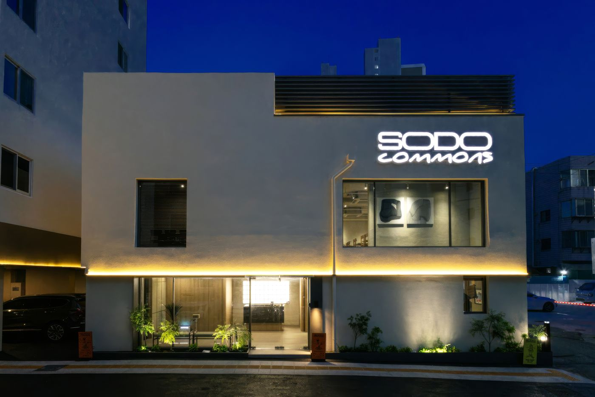
- 체크인 · 아웃
- 16:00 · 12:00
- 투숙 기간 중 주차는 무료입니다.
- 퇴실 연장은 프론트 데스크로 미리 문의해 주세요. 추가 요금이 있을 수 있습니다.
- 건물 내부는 전면 금연이며, 흡연은 1층 야외 주차장의 흡연장소를 이용해 주세요.
FAQ
자주 묻는 질문
방문 전에 궁금하실 만한 내용을 정리했습니다.
금촌역에서 가까운가요?
경의중앙선 금촌역에서 걸어서 약 4분 거리입니다. 금촌 시내 중심에 있어 식당과 편의시설을 이용하기 편하고, 대중교통으로 오셔도 이동이 짧습니다.
주차는 가능한가요?
네, 투숙 기간 동안 무료로 주차할 수 있으며 발렛 서비스도 제공합니다. 차량으로 오셔도 주차 걱정 없이 머무실 수 있습니다.
체크인과 체크아웃 시간은 어떻게 되나요?
체크인은 16:00, 체크아웃은 12:00입니다. 시간 조정이 필요하시면 대표전화 031-949-1583으로 문의해 주세요.
객실 종류는 어떻게 나뉘나요?
기본 구성의 소도 디럭스 에센셜, 객실 안에 사우나가 있는 소도 시그니처 딥 사우나, 최대 3명까지 머물 수 있는 소도 시그니처 트윈, 비데를 갖춘 소도 워크 앤 바스까지 네 가지입니다. 투숙 인원과 목적에 맞게 골라 주세요.
사우나가 있는 객실이 있나요?
시그니처 딥 사우나 객실에는 객실 안에 편백나무 건식 사우나가 있습니다. 금촌에서 사우나 객실을 찾으신다면 이 객실을 선택해 주세요.
객실 인원을 넘으면 추가요금이 있나요?
기준 인원을 초과하면 1인당 20,000원의 추가요금이 있습니다. 객실마다 기준 인원과 최대 인원이 다르니, 예약 전에 객실별 조건을 확인해 주세요.
객실 종류별 요금은 얼마나 차이 나나요?
요금은 투숙 날짜와 요일, 예약 상품에 따라 달라집니다. 같은 날짜·인원·조식 조건으로 각 객실의 최종 금액을 비교해 보시거나, 직통전화 010-8408-2036으로 문의하시면 안내해 드립니다.
출장 고객용 연박 상품을 하루만 묵어도 이용할 수 있나요?
연박 상품은 2박 이상 연속으로 숙박하실 때 적용되며, 1박에는 적용되지 않습니다. 연박 기간과 객실 수에 따라 금액이 달라지니 직통전화 010-8408-2036으로 프런트에 문의해 주세요.
조식은 객실 요금에 포함되어 있나요?
예약 상품에 ‘조식 포함’ 표시가 있다면 포함입니다. 표시가 없다면 1인 10,000원에 별도로 이용하실 수 있습니다. 조식은 07:00–09:00에 한식 위주로 스프·샐러드·모닝빵과 함께 제공되며, 매주 일요일은 운영하지 않습니다.
조식은 당일에도 신청할 수 있나요?
식재료 준비를 위해 투숙 전날까지 미리 신청해 주시는 것이 원칙입니다. 다만 소수 인원은 당일 신청도 가능하니 프런트에 문의해 주세요. 매주 일요일은 조식을 운영하지 않습니다.
별관 소도 커먼즈는 투숙객만 이용할 수 있나요?
아니요, 소도 커먼즈는 숙박 여부와 관계없이 누구나 이용할 수 있는 공간입니다. 투숙객은 카페·레스토랑·루프탑·회의실을 체크인 전후 시간에도 편하게 활용하실 수 있습니다.
파주 출장 숙소로 이용하기 좋은가요?
LG디스플레이 파주 단지까지 차량으로 약 10~15분입니다. 별관 소도 커먼즈의 회의실과 본관의 공용 PC·세탁실·스팀다리미를 이용할 수 있고, 07:00부터 조식(일요일 휴무)을 제공해 금촌 출장·비즈니스 숙박에 알맞습니다.
킨텍스 행사 참석 중에 머물기에도 괜찮나요?
고양 킨텍스까지 차량으로 약 25분 거리입니다. 행사 일정 전후로 머무는 숙소로 이용하기 좋습니다.
커플이나 가족 여행 숙소로도 괜찮나요?
모든 객실에 킹사이즈 시몬스 침대와 통합 OTT를 갖췄고, 시그니처 트윈은 최대 3명까지 머물 수 있습니다. 카페·레스토랑·루프탑이 있는 소도 커먼즈에서 파주 데이트나 가족여행의 하루를 편하게 마무리하세요.
Naver Place
네이버에서 만나는 소도호텔
객실 사진과 방문 후기, 실시간 예약까지 네이버플레이스에서 한 번에 확인하세요.